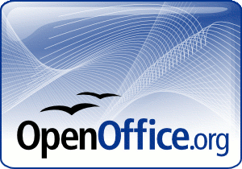
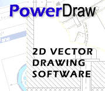
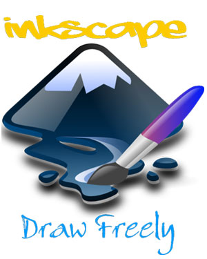
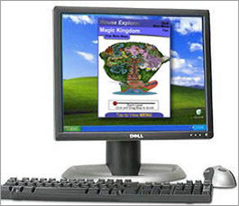
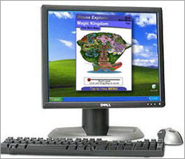
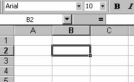

Office
Op deze pagina hebben we het over office toepassingen.
Indien op je pc een (recente) Microsoft Office aanwezig is, is 'Open Office' overbodig.
De andere programma's van deze pagina zijn nuttig 'als je ze nodig hebt' (desktop publishing, tekenen, grafische editor). In een beginfase kan je ze zeker overslaan.
De lokale kopies van de programma's kan je hier vinden.
Naam: LaTeX
Categorie: office
Waardeoordeel: 5
Waardeoordeel op een schaal van 5 .. 1 (5='need to have', 3='good
to have', 1='nice to have')
Software:
- Miktex
- Texstudio
- PDFill
pdf tools
- LaTeX
voor beginners (handleiding in het Nederlands)
- Overleaf.com:
is een omgeving waarbij je via een webbrowser LaTeX teksten kan
schrijven zonder installatie van een programma. Het is dus een
alternatief voor Miktex en Texstudio als je bijvoorbeeld eens
wil proberen wat de mogelijkheden zijn. Het interessante aan
deze website is dat je met meerdere personen tegelijkertijd zelfs
op dezelfde bestanden kan werken.
- http://users.skynet.be/denkendehanden/latex.html
- https://nl.wikibooks.org/wiki/LaTeX
- https://en.wikibooks.org/wiki/LaTeX
- LaTeX
startomgeving en voorbeeld (zip bestand, bruikbaar in Overleaf
en Texstudio)
Beschrijving:
LaTeX (uitgesproken
als latech) is een tekstverwerker die veel gebruikt wordt door
onderzoekers. Vele studenten elektronica-ICT gebruiken het eveneens
voor hun wetenschappelijk project in het tweede jaar of schakeljaar
én voor hun scriptie van de masterproef (thesis). Word
is WYSIWYG (what you see is what you get), Latex is eerder WYMISYG
(what you mean is what you get).
Het grote voordeel is dat bijvoorbeeld een lijst van figuren
en van tabellen, de referentiekijst, ... automatisch worden gegenereert
volgens de gewenste norm. De output van LaTeX is steeds een pdf
bestand.
Met de pdf tools van PDFill kan je bijvoorbeeld verschillende
pdf bestanden tot 1 bestand samenvoegen, paginanummers toevoegen,
bladzijden verwijderen uit pdf bestanden, verschillende bladzijden
op 1 bladzijde samenvoegen, ... .
Om LaTeX te gebruiken heb je twee programma's nodig: een compiler
en een goede teksteditor. Miktex is een bundel met een compilers
en een eenvoudige teksteditor. Texstudio is een goede teksteditor.
Naam: Libre office
Categorie: office
Waardeoordeel: 5
Waardeoordeel op een schaal van 5 .. 1 (5='need to have', 3='good
to have', 1='nice to have')
Beschrijving:
Libre Office is een zeer goed alternatief voor Microsoft Office.
Het is het standaard office pakket in alle Linux systemen! Je
kan er Word, Excel, Powerpoint bestanden mee openen en wegschrijven.
Kan docx, xlsx, pptx bestanden (Office 2007 formaat) openen en
schrijven. Modules: writer, calc, impress (presentaties), draw,
base (front end database), math (vergelijkingen). Je kan ook
pdf bestanden wegschrijven. Wanneer men de portableversie bijvoorbeeld
op een USB geheugenstick plaatst (wel 500MB tot 1GB nodig) kan
je het programma gebruiken op elke computer zonder het te moeten
installeren, gebruik rechtstreeks vanaf de USB geheugenstick.
Naam: Open office
Categorie: office
Waardeoordeel: 3
Waardeoordeel op een schaal van 5 .. 1 (5='need to have', 3='good
to have', 1='nice to have')
Beschrijving:
Open office is een goed alternatief voor Microsoft Office. Je
kan er Word, Excel, Powerpoint bestanden mee openen en wegschrijven.
Het is ook bruikbaar als html editor (voor websites). Er komen
maar sporadisch nieuwe versies van Open Office uit, zodat Libre
Office een beter alternatief is.
Eventueel moet je apart nog Java installeren: download
van internet
Naam: Powerdraw
Categorie: tekenen
Waardeoordeel: 4
Waardeoordeel op een schaal van 5 .. 1 (5='need to have', 3='good to have', 1='nice to have')
Download van internet - alternatieve site
Beschrijving: PowerDraw is een krachtig 2D vector tekenprogramma met een aantal interessante mogelijkheden zoals ondersteuning voor macros, plugins, importeren van autocad dxf, exporterten naar onder andere wmf, bmp en dxf, onbeperkte herstelmogelijkheid, het werken met lagen en nog veel meer. Zeer interessant!
Naam: Inkscape
Categorie: grafische editor
Waardeoordeel: 5
Waardeoordeel op een schaal van 5 .. 1 (5='need to have', 3='good
to have', 1='nice to have')
Beschrijving:
Inkscape is een vector graphics editor met mogelijkheden zoals
Illustrator, CorelDraw of Xara X. Nodig om vb svg bestanden om
te zetten naar pdf voor gebruik met LaTeX.
Naam: Dia
Categorie: schema's tekenen
Waardeoordeel: 2
Waardeoordeel op een schaal van 5 .. 1 (5='need to have', 3='good
to have', 1='nice to have')
Download van internet - download installer
Beschrijving:
Dia laat toe diagrammen te tekenen, zoals Visio. Nuttig vanaf
het tweede bachelorjaar.
Naam: Scribus 

Categorie: desktop publishing
Waardeoordeel: 1
Waardeoordeel op een schaal van 5 .. 1 (5='need to have', 3='good
to have', 1='nice to have')
Beschrijving:
Scribus is een programma voor desktop publishing: mooie opmaak
van pagina's. Je kan het resultaat wegschrijven in een eigen
formaat of als pdf bestand. Nederlands.
Naam: Gnumeric
Categorie: rekenblad
Waardeoordeel: 1
Waardeoordeel op een schaal van 5 .. 1 (5='need to have', 3='good
to have', 1='nice to have')
Beschrijving:
Gnumeric is een alternatief voor Excel met een gebruikersinterface
gelijkaardig aan Excel XP. Het kan Excel bestanden lezen en schrijven
(ook Excel 2007). Alleen interessant als je geen Excel op je
computer hebt én als je niet libre offfice wenst te installeren.
Nederlands.
Naam: Abiword
Categorie: tekstverwerker
Waardeoordeel: 1
Waardeoordeel op een schaal van 5 .. 1 (5='need to have', 3='good
to have', 1='nice to have')
Download van internet (de Windows versie bestaat niet meer)
Beschrijving:
Abiword is een alternatief voor Word met een gebruikersinterface
gelijkaardig aan Word XP. Het kan Word bestanden lezen en schrijven
(ook Word 2007). Alleen interessant als je geen Word op je computer
hebt én als je niet libre offfice wenst te installeren.
Nederlands.